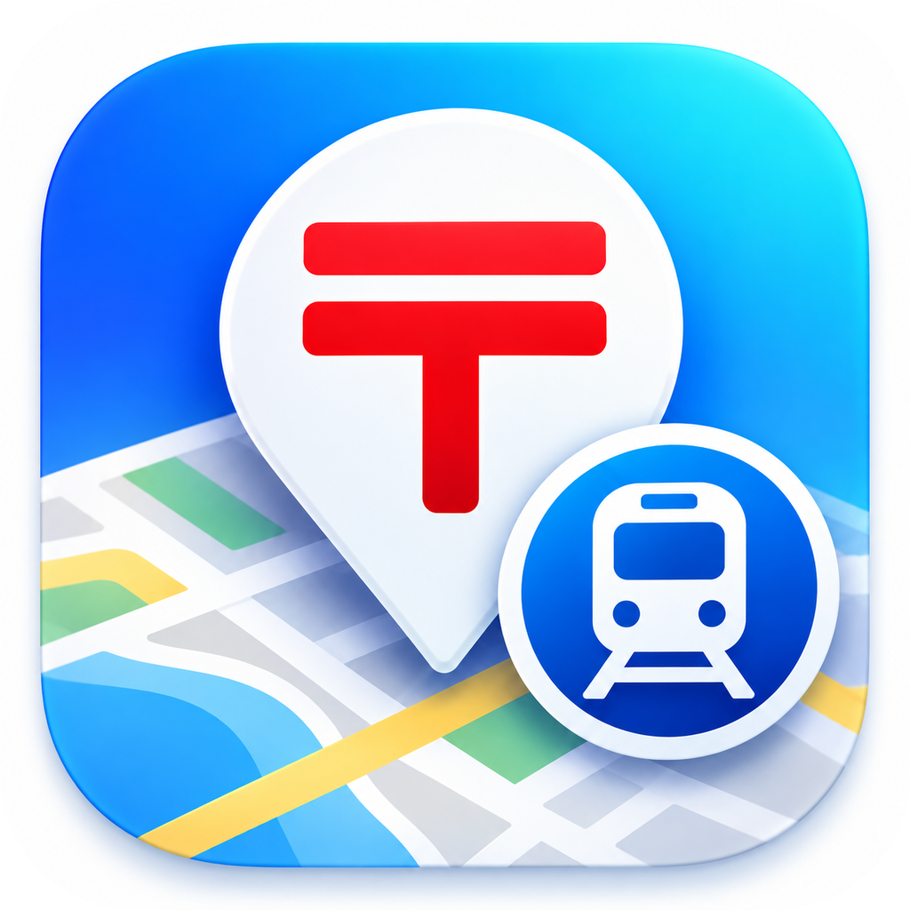
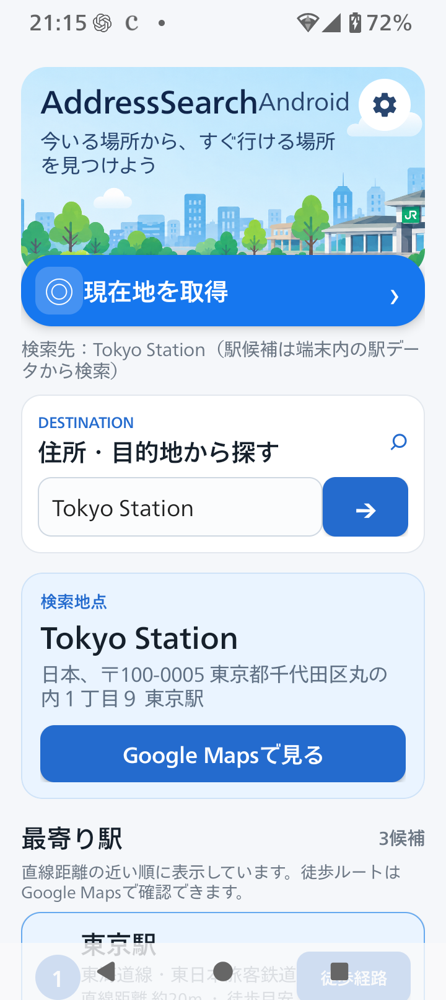
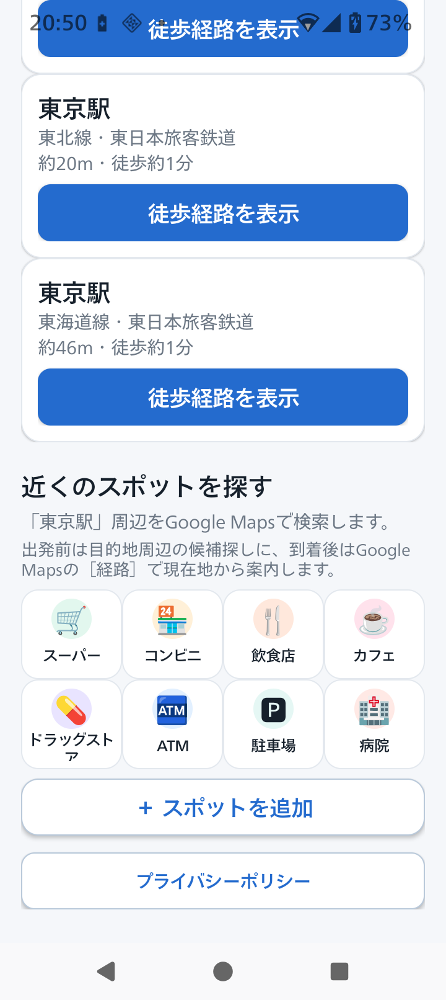

0EN WORK / ANDROID APP
AddressSearch
行き先の近くにある駅を、手早く確認。
現在地や住所・目的地から近くの駅を探せるAndroidアプリです。
駅までの距離を参考にしながら、徒歩経路や周辺施設はGoogle Mapsで確認できます。
Google Playの案内URLは、公開準備ができ次第このページに追加します。

アプリ概要・主な機能
駅候補から、経路や周辺施設の確認まで。
AddressSearchは、現在地または入力した住所・目的地を起点に、近くの駅候補を表示するAndroidアプリです。
駅までの距離を目安として見ながら、必要に応じてGoogle Mapsで
徒歩経路や周辺のお店を確認できます。
- 現在地または住所・目的地から駅を検索
- 近くの駅候補と、候補までの直線距離を表示
- 選んだ駅までの徒歩経路をGoogle Mapsで確認
- スーパー、コンビニ、飲食店、ドラッグストアなどをGoogle Mapsで検索
APP VISUALS
アプリの画面
AddressSearch Androidアプリの実画面と、周辺情報を確認する流れをご紹介します。


DATA & SERVICES
使用データと外部サービス
駅データ：国土交通省「国土数値情報 鉄道データ（N02・2024年版）」を加工して使用しています。ライセンスはCC BY 4.0です。
国土数値情報 鉄道データ（N02・2024年度） ／ CC BY 4.0
住所や施設名から場所を探すときは、Android標準のGeocoderを利用します。提供元や通信の有無は、端末・OSの実装によって異なります。
Google Mapsを開く操作をした場合、選択した場所の座標や検索語をGoogle Mapsまたは端末のブラウザへ引き継ぎます。
駅候補・距離は参考情報です。距離は直線距離であり、画面に表示される徒歩時間もその距離をもとにした目安です。実際の徒歩距離・経路とは異なります。徒歩経路はGoogle Mapsでご確認ください。
AddressSearch Privacy Policy